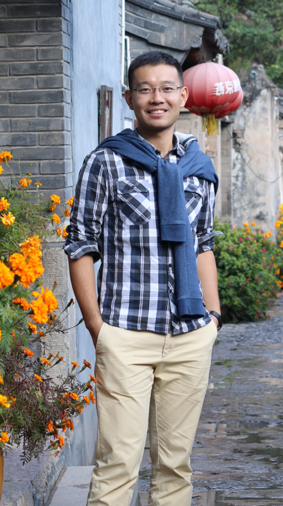

|  |
Guo CHEN (陈果) Hunan University Associate Professor College of Computer Science and Electronic Engineering Deputy Director Office of Informatization Address: Hunan University, Yuelu District, Changsha, Hunan, China, 410082 Work Email: guochen@hnu.edu.cn Personal Email: 1989chenguo@163.com |